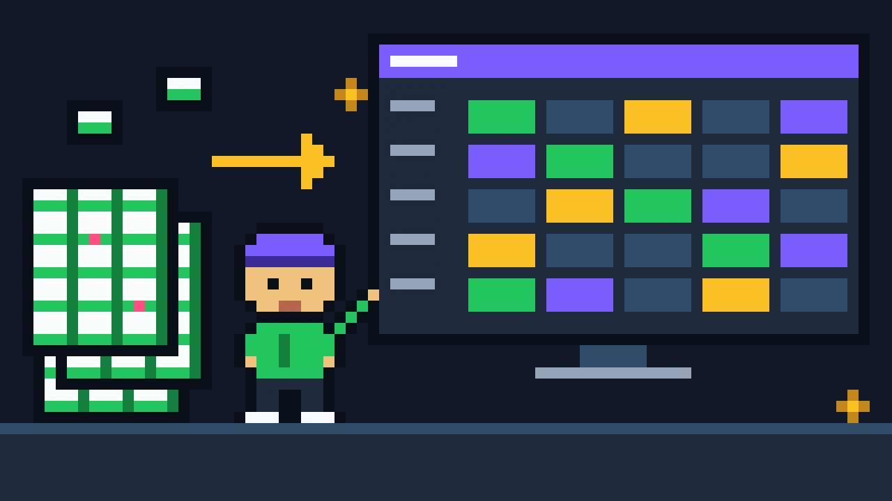
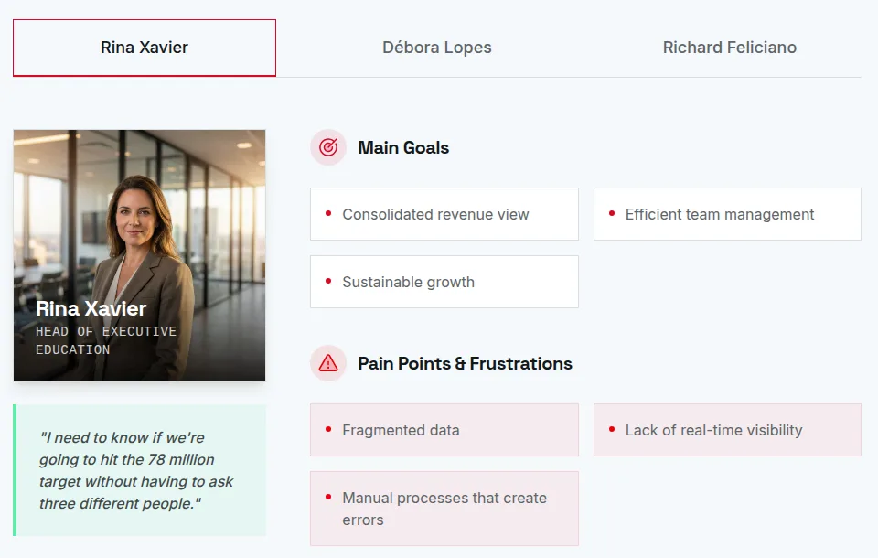
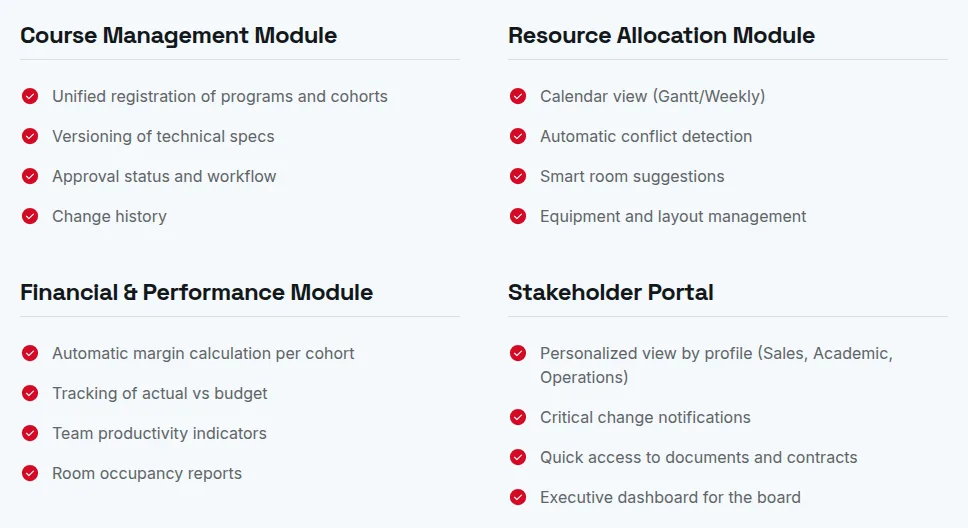

Insper
Turning manual processes and fragmented data into a single, strategic view of courses, rooms and resources for one of Brazil's leading business schools.

Challenge
Insper grew exponentially, but its academic operations stayed analog: critical data scattered across dozens of disconnected spreadsheets, causing daily inconsistencies and rework.
“We need a management view that lets us understand not only what happened, but what is going to happen in our operation.”Silvio Abrahão Laban Neto, Area Director

Process
High-performing teams were spending hours on repetitive allocation tasks and manual checks, while managers had no real-time metrics to decide about courses and resources.
After a four-week discovery with the key players of four departments, I designed a web application that centralizes course, room and resource management, using an AI-assisted design approach.

Results
5key stakeholders interviewed
4departments impacted
4 weeksof discovery
78Mannual revenue target